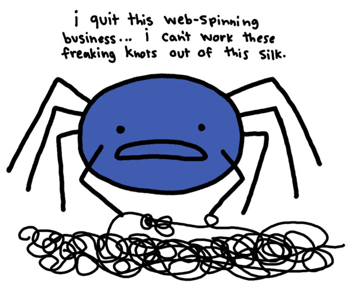
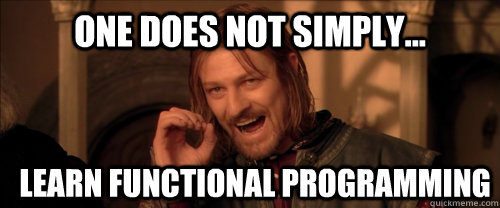
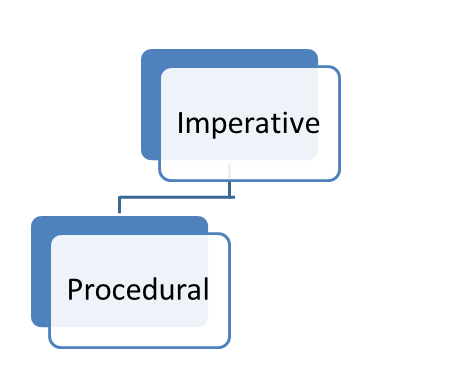
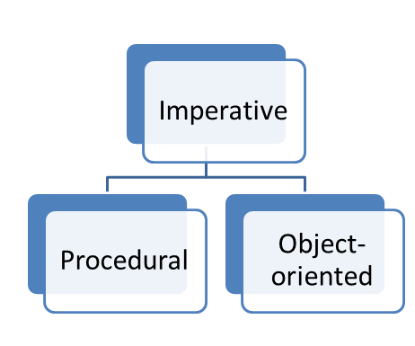
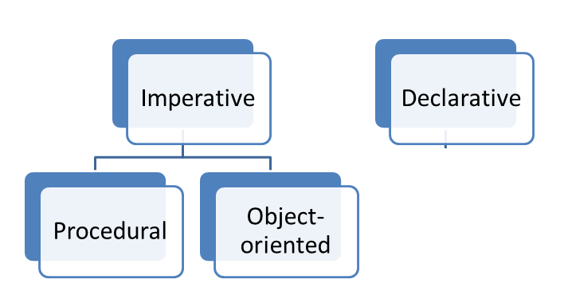
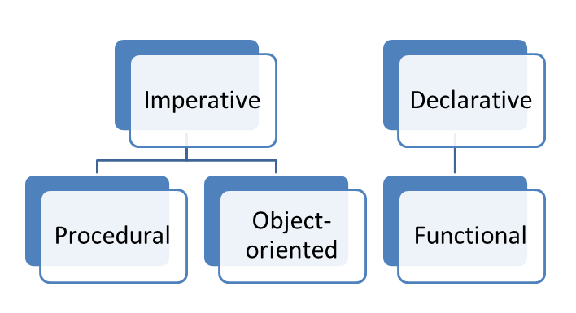
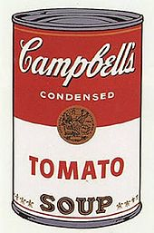

I don't know what I am doing
The path to functional programming
Frustration

Intellectual curiosity

Why Functional Programming Matters
by John Hughes (1990)
http://www.cs.kent.ac.uk/people/staff/dat/miranda/whyfp90.pdf
Programming Paradigms
- Imperative
- Procedural
- Object-oriented
- Declarative
- Functional
Imperative
tell the computer what to do programming
Procedural
Cobol, .net 1.1

Object-oriented
model the domain: subjects and actions

Declarative
tell the computer how it is

Functional
Programming paradigm where the fundamental operation is the application of functions to arguments

Functional
a complete functional program is just a function from its input to its outputJohn Hughes

f (x) = 2x
- Expresses relationship between the function input and the output
- Is declarative
Benefits of Functional Programming
- Referential transparency
- Pure functions
- Function composition
- Higher order functions
- Laziness
Referential transparency
expressions and their value are interchangeable
f (x) = x + 1
x = 2 + 3
f (2 + 3) = (2 + 3) + 1
= 6
Pure functions
- for a given input the result is always the same
- there are no observable side-effects
- makes it easier to reason about the correctness of code
- enables automatic compiler optimisations and parallelism

If you don't know...
I'm not going to tell you
the perfect functional program
... 'does' nothing
What is the speed of sound?
- at sea level?
- at 40,000m?
- in a vacuum?
Standard Temperature and Pressure
273.15 K (0c) 100kPa
makes experiments repeatable
It's about trust
Function Composition
Combine many trustworthy pure functions into larger trustworthy pure functions
function f(a) { ... }
function g(b) { ... }
function fgComposed(a) {
return g(f(a));
}
Combining unix shell programs
This is the Unix philosophy: Write programs that do one thing and do it well. Write programs to work together. Write programs to handle text streams, because that is a universal interface.
Doug McIlroy, Bell Labs
find . | wc -l
find . | grep .js
find . | grep .js | wc -l

Douglas McIlroy Vs. Donald Knuth
1: tr -cs A-Za-z '\n' |
2: tr A-Z a-z |
3: sort |
4: uniq -c |
5: sort -rn |
6: sed ${1}q
Node.js Streams
// file streaming
http.createServer(function(request, response) {
var readableStream = fs.createReadStream('README.md');
readableStream.pipe(response);
});
Haskell Function Composition
wc (find x)
= wc $ find x
= (wc . find) x
Higher-order functions
Take a function as an input or outputs a function
@Html.EditorFor(c => c.PropertyName)
function createAdder(increment) {
return function (input) {
return increment + input;
};
}
Laziness
someCondition && calcPiToBillionPlaces()
false && calcPiToBillionPlaces()
Lazy wins!
yield
yield_lazy.linq
IQueryable
Lazy functional languages
Some languages are lazy by default
take 10 [1..1000000000000000000000000000000000000000000000000]
[1,2,3,4,5,6,7,8,9,10]
g (f input)
Recall that a complete functional program is just a function from its input to its output
Safe in functional languages because sequence is not important
Things that I don't like in class-oriented languages
Creating a class to hold a function
Class-oriented languages don't allow functions to be declared without a class
public class Calculator
{
public int Add(int first, int second) {
return first + second;
}
}
var myCalculator = new Calculator();
myCalculator.Add(1,2);
// => 3
Functions that are too visible
public int CountJsFiles() {
return GetLines().Where(EndsWithJs).Aggregate(0, Step);
}
private IEnumerable GetLines() {
return new [] {"one.js", "two.js", "README.txt" };
}
private bool EndsWithJs(string line) {
return line.EndsWith(".js");
}
private int Step(int memo, string item) {
return memo += 1;
}
Functional in an imperative world

LINQ
a set of higher order functions that compose pure functions
Find(".") // find .
.Where(line => line.EndsWith(".js")) // grep .js
.Aggregate(0, (memo,item) => memo += 1) // wc -l
linq.linq
TagBuilder
// imperative
var builder = new TagBuilder("h1");
builder.InnerHTML = "My Heading";
var tag = builder.ToString();
// functional
var tag = TagBuilder.Create("h1",
tag => tag.InnerHTML = "My Heading");
Local functions
separate_functions.linq
private int CountJsFiles() {
Func< string,bool > EndsWithJs = (line)=>line.EndsWith(".js");
Func< int, string, int > Step = (memo, item)=> memo += 1;
Func< IEnumerable< string > > GetLines = ()=>new [] {"one.js", "two.js", "README.txt"};
return GetLines().Where(EndsWithJs).Aggregate(0, Step);
}
local_functions.linq
Pure functions
Work just fine
public int Add(int one, int two) {
return one + two;
}
Static functions on static classes
public static class Calculate {
public static int Add(int one, int two) {
return one + two;
}
}